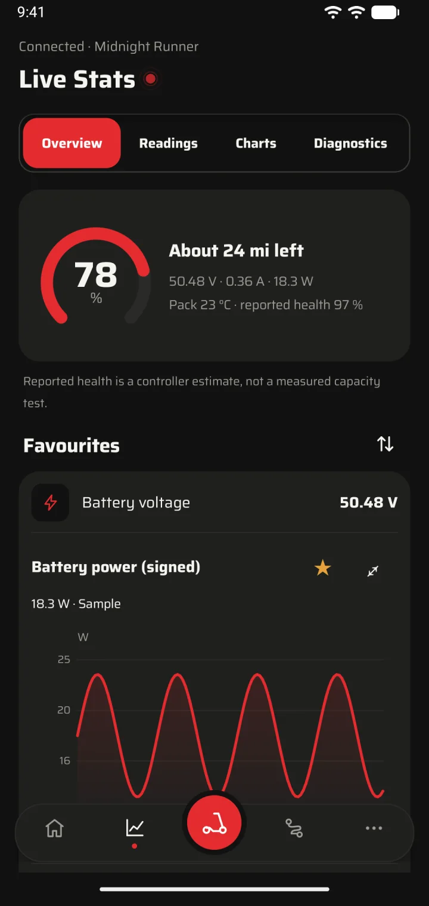
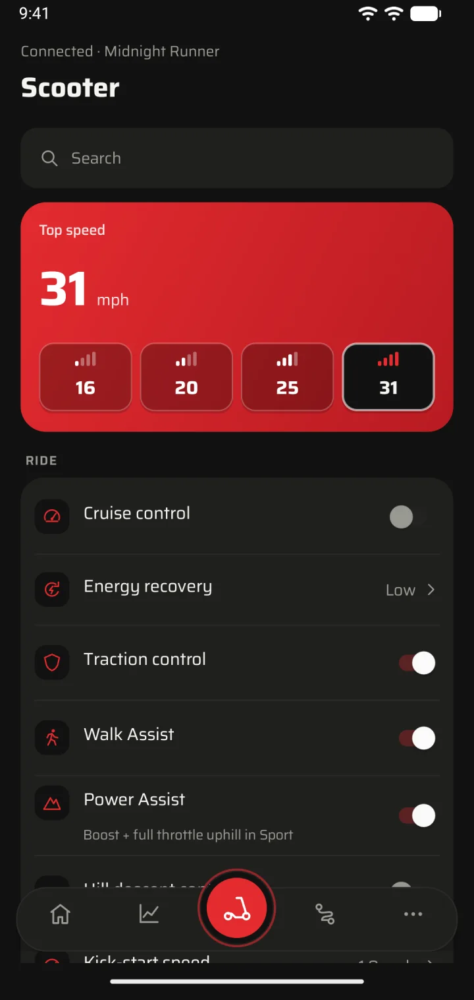

Lock it. Unlock it. Offline.
A slide-to-lock switch that talks straight to your scooter. No signal needed, and Volt shows the change once the scooter confirms it.
Volt is an independent, open source Android app for your NAVEE scooter. Lock and unlock, change settings, watch live readings and record rides, straight over Bluetooth. No account. Works offline.

What it does
The official NAVEE app requires an internet connection to work. Volt gives you the controls and numbers you want—fast and local.
A slide-to-lock switch that talks straight to your scooter. No signal needed, and Volt shows the change once the scooter confirms it.
Move and resize widgets so what you check most comes first.
Battery, range, power, temperatures and trip stats, with charts and history.

Top speed, cruise control, energy recovery, lights and more.

Rides and charging
Record a ride and see the route colored by power or grade. While charging, see live power and time to full.

Built for foldables
Separate layouts for folded and unfolded, and nothing reloads when you open the phone.
Privacy
* Map backgrounds are off by default. When enabled, the provider sees your IP address and the map area you view.
Setup
You'll need:
Download the APK from GitHub Releases and open it on your phone.
Volt's onboarding helps you copy your scooter's owner key from the NAVEE app. You never enter a password. Open the setup helper
Close NAVEE and connect in Volt. After setup, no computer or signal needed.
Questions
No. Volt is an independent project and isn't affiliated with NAVEE or its app vendor.
Volt is built for NAVEE scooters, with controls tailored to the connected model. Features vary by model and firmware. The US UT5 MAX has been tested on hardware; other mapped models are still being verified.
No. Locking, controls, readings and ride recording work offline. Map backgrounds are optional and only load after you turn them on.
Not right now. Volt runs on Android 8.0 and newer, including foldables.
On your phone. You can export rides or make a password-protected backup whenever you like.
Volt 1.4.6 for Android 8.0 and newer. Free, with no account.
Downloads come from GitHub Releases, with SHA-256 checksums.